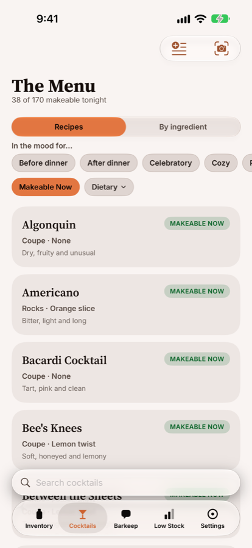
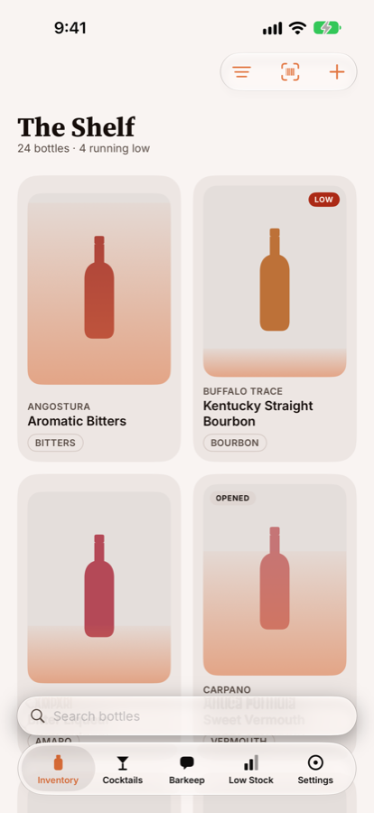
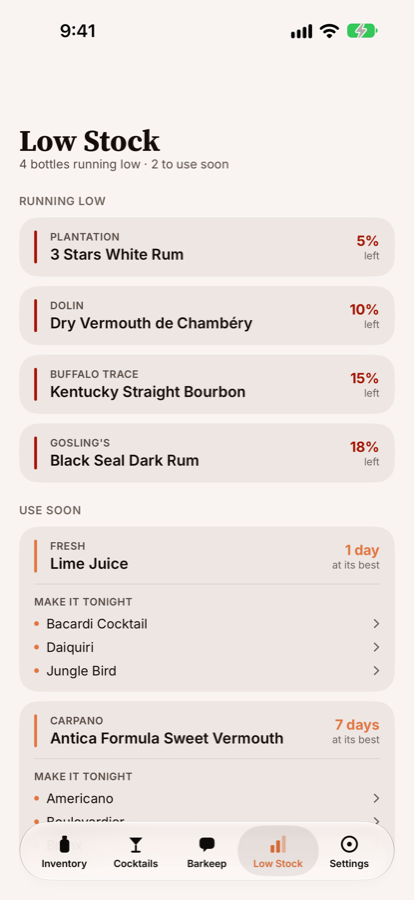

0 drinks from this shelf
Tap to add or remove. Real recipes, real matching — 15 of the app’s 170.



The AI runs on your phone
Photograph a bottle and BarKeep reads the label — brand, type, size, strength — using Apple's on-device model. Not a cloud service with a local fallback: on-device is the default, with no account and no API key. Photos of your liquor cabinet stay on your phone.
Zero-proof isn't a separate tab
26 of the 170 recipes contain no alcohol — a Nogroni, a Virgin Paloma, a Ginger Switchel, a proper Chocolate Egg Cream. They live in the same book as everything else and run through the same “what can I make tonight” filter, so a shelf with no spirits on it works exactly the same way.
No account, no sign-up, no ads
There is nothing to log into. Your inventory lives on your device and syncs through your own iCloud. The one feature that uses a server sends an ingredient list and nothing else — never the recipe name, and nothing about you or your bar.